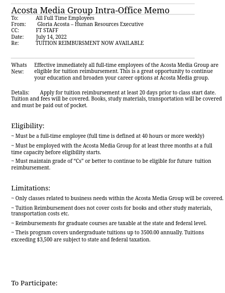

Module 3: Listening and Written Communication
🎯 Learning Objectives
- Contrast listening with hearing.
- Identify key components of the listening process.
- Identify levels of listening.
- Identify barriers to effective listening and how to overcome them.
- Define written business communication.
- Identify different forms of written business communication.
- Differentiate between a memorandum (Memo) and a letter.
- Identify essential features in a formal business letter.
- List various types of business letters and their application.
📚 Lesson Six: Listening
Listening is perhaps the most critical element in communication. Listening is closely associated with hearing. You can hear a speaker but not necessarily listen to what he/she is saying. When a speaker speaks too rapidly or with a high pitch voice, for example, the listener looses interest. In this case, the listener hears the voice but does not listen to it. Listening means beyond hearing in that it also involves interpreting and evaluating what is being said.
In business communication, listening is a skill, which can he developed and improved through practice. It is estimated that listening takes up to 45 percent of all time spent in communication. Listening is a skill that business communications must use in a variety of situations throughout a typical business day. This chapter discusses listening in terms of the role it plays in business.
Introduction
When someone speaks to us, we know that they intend to communicate. Naturally, the speaker expects that they would be understood. Similarly, listening is an intentional act. We speak if we intend to be understood. However, if we intend to be understanding, we must become good listeners. Listening is an active intentional process which requires concentration on sound and driving meaning from it. Communication process itself becomes ineffective without listening. Listening is the ability to hear, interpret, and evaluate a message from the sender's point of view.
When you only hear the words, you are not really listening to understand the intended meaning of the message. You are more concerned about the words themselves, rather than their meaning or the message that the speaker is trying to convey. However, in listening for the message, you attempt to understand the message beyond hearing the words and trying to evaluate and interpret what the sender is trying to communicate.
The Process of Active Listening
An active listening usually begins with the sender. (Speaker) making a statement. In business, the sender's communication may be about a problem to be solved, a new product to be launched, an announcement of an anticipated change in management, an idea to be shared or some sort of entertainment The listener may respond either positively or negatively to the sender. The receiver's reaction will encourage the sender to continue the communication. If the reaction is negative, the sender may: stop the business communication. If the receiver's response is neither positive nor negative, meaning the receiver is not judgmental; the sender may try to elaborate on the subject matter for clarity. The sender may also continue communication without further clarification to the receiver.
Active listing goes through four stages. At each stage of listening, communication can be effected positively or negatively. The four stages of listening include sensing, interpreting, evaluating and responding.
- Sensing:. This is the first stage of active listening. This stage involves simple hearing. The listener paraphrases what the speaker has said. The listener has to perceive the message from the sender's view point, repeat in his or her own words what he or she thinks the sender said for clarification to confirm understanding. At this stage, the receiver may ask questions seeking clarification.
- Interpreting: Stage two of listening process involves deriving meaning from the words. If the sender's message is received clearly, the receiver will not seek clarification. The receiver's understanding may reflect on any underlying emotional content as well.
The receiver may interpret the sender's feelings through expressing the words such as “I gather- that you felt confused” Or saddened, or frustrated. It is equally important to understand the attitudes and motives behind the words that are said as you listen to them. .
- Evaluating: This third stage of listening involves judging what the message is about in context. At this stage, the listener analyzes any nonverbal lines including tone of voice, gestures, and facial expressions as applied by the sender. The listener checks the extent to which non-verbal clues are consistent with the senders' spoken words.
- Responding. This last stage of listening turns listening into a two-way process. This step allows feedback, advice, action and reaction. Providing feedback to the speaker is an important part of the active listening process. The listener can use a variety of communication such as verbal, non- verbal and non-judgmental response to acknowledge that lie/she understands and is interested in what the speaker is communicating. An effective communication requires that there be a feedback, which is an essential part of in the business communication process. No genuine feedback can take place without serious listening. Genuine feedback lets us know we are being understood. Feedback enables us to modify a message and improve understanding.
Levels of Listening
The extent to which we concentrate while listening varies with situations. Some situations demand more concentration and effort than others. The variations in listening concentration, thus forms the basis for levels of listening. Some of the occasions, which call for different levels of listening, include:
- Listening for enjoyment Level 1
- Listening for information Level 2
- Critical listening Level 3
- Precision listening Level 4
- Emphatic listening Level 5
Level I. listening for enjoyment: This is the easiest of the five levels of listening. This level of listening occurs when we are relaxed, watching TV, listening to music or radio, for our own amusement or entertainment. Such an occasion usually requires momentary concentration. You may miss a joke or a song but you catch up with the remaining bit of the entertainment or amusement. Note taking is not required and therefore not much is at stake. We can also be involved in social situations where we join someone in a conversation while listening to music.
Listening for social reasons means being part of the listening, which is polite and validates status of the other person. It gives the person a feeling of being important.
Level 2: Listening for information: This leve of listening normally requires not only high concentration. The listener may also need to take notes while listening. When you listen to a class discussion or church sermon, for example, you listen for informative communication. This type of listening carries with it an expectation of retention. This level of listening, therefore, is characterized by retention, the remembering and recall of information. Listening for information can also occur in a social setting. A friend telling you about a problem he/she has with a computer, requires an attention. However, such a conversation is informal and the listening takes place in a more relaxed atmosphere than would occur in a class lecture setting, a product demonstration, or a problem solving discussion.
Whether formal or informal, a conversation can only carry on when Listening is involved. A normal conversation naturally leads people to talking about another topic or idea. Appropriate and relevant comments can only be made when the people conversing are able to track the information that is being shared. Lack of listening may lead to inappropriate comments that are off- topic and puzzling to others.
Level 3: Critical listening: This level of listening is even more active. It involves intensive concentration associated with analyzing and. evaluating information. A critical listener will take information and retain it. A critical Listener, at the same time questions the information and tests it against other sources. A critical listener gives more thoughtful and perspective feedback. You can improve your speech by involving critical thinker. They can give a sound advice by listening, analyzing and evaluating what you are saying.
Level 4 precision listening: This level of listening requires exactness, accuracy, ability to distinguish clearly. Listening with precision goes beyond critical listening. Precision listening requires you to capture every little detail that gives you clues to the speaker's emotions or state of mind. Precision listeners hear the facts, the minute changes in a speaker's voice that reveals what the speaker feels. They pay attention to the speaker's voice, body movement, pausing,' and facial expression, among other things. Precision listeners can help you improve what you communicate and how you communicate it.
Level 5. Emphatic listening: This is the highest level of listening. It requires high-level concentration, retention and judgment. More important, it requires empathy, the ability to put yourself in someone else position and understand his/her feelings. An empathic listener is motivated to understand how the speaker feels.
While he/she may not agree with the speaker, an empathic listener makes a deliberate effort to understand the speaker's feelings.
Barriers to Effective listening
Quite often we do not become good listeners due to various factors that impair our listening ability. A listening barrier is any condition: physical, mental, or cultural that reduces the likelihood a message can be received and understood. The level of effective listening depends on the extent to which listening barriers are reduced. Barriers to affective listening can he classified into three broad categories: physical, mental, and cultural.
Physical Barriers to Listening
The most common barriers to listening are physical barriers to hearing itself,
Some of physical barriers include:
- Total or partial hearing impairment
- Poor audio system
- Distractions.
Hearing impairment: A person with a total or partial hearing will find it difficult to listen. However, the condition will not make it impossible for the person to listen altogether.
Audio system: The use of poor audio system by a speaker will reduce the receiver's ability to listen. It is important to note that speakers and listeners both have equal responsibility for good listening.
Distractions: Distractions are sights, sounds or thoughts that keep someone from listening to a message. At work, for example, people may be distracted by noises or activities that are nearby or they may be thinking about problems, which keep them from concentrating.
When you become distracted, you lose some ability to understand what is being said. It is, there- fore, important to avoid or ignore distractions when listening to a speaker. In situations in where you listen to outside sounds or watching other people force your attention to the speaker's message.
Mental Barriers to Listening
Mental barriers to listening are more difficult to deal with. These types of barriers involve a person's mental process in a way that reduces the person's listening ability. Some of these barriers include:
- Lack of concentration
- Poor attitude,
- Wasting review time,
- Planning a reply,
- Dislike for the speaker
- Emotions
- Assumptions
These types of barriers can occur in different situations as described below.
Lack of concentration: This situation occurs when a person does not pay close attention to the speaker's message. Effective listening requires that the listener keeps his or her thoughts on what is being said at all times. Concentration will facilitate the listener's ability to remember the main ideas that are being presented. When people become tired or bored, they find it difficult to pay attention to a speaker. In business, lack of concentration can lead to failure to capture much needed information. It is imperative, therefore, that every effort be made to pay attention no matter how difficult the situation. Paying attention will also help create of goodwill on the part of the speaker.
Poor attitude: An attitude is a state of mind about something —the belief of feelings we have about ourselves, other people, ideas and events. Often, attitude can be a mental barrier to listening. An audience with a hostile attitude will probably have a listening problem. In a class situation, for example, students with an attitude about a course will capture very little, if any, of lectures presentation. Consequently, the student will not perform well in the course.
People with attitude may reduce their level of listening simply because they disagree with the speaker's viewpoints; they think a topic being discussed is boring or unimportant. Another common attitudinal problem is selective listening, which occurs when we block out anything we do not want to hear and pay attention only to information that coincides with our own beliefs
Wasting review time: This type of barriers arises from the rate at which a speaker talks and at the difference between the rate at which the receiver listens. Our brains process 500 words per minute. Most listening take place at the rate of 125-250 words per minute. This means, when we think faster than the other talks, a gap of extra time is created. This gap, between processing rate and talking rate, creates a listening problem. The listening problem is that the listener may start daydreaming. Since a typical listener can generally think faster than a speaker can speak, the mind of the person listening can wander from a spoken message. In this case, the listener is wasting valuable review time. Good listener uses this extra time to think, judge, empathize, analyze and use other listening skills to enhance their listening quality.
Planning a reply: Planning becomes a listening barrier when in a conversation, a receiver spends his or her time on preparing a reply to a sender's message. To communicate effectively, the sender and the listener both take turns speaking and listening. A problem arises when either of the two people uses his or her turn for listening to think about a reply to make to the person speaking. In such a situation, the person who should be listening is only hearing the speaker's message. Consequently the reply will most likely make no sense to the speaker. The speaker, on realizing that the listener did not pay attention to his or her message, may feel offended. The speaker may then lose confidence in the Listener's communication skills. You can avoid this by making an effort to concentrate on the words of a speaker. Your thoughts about a repty should not prevent you from listening to a speaker's complete message.
Dislike for the speaker: It is common for people not to listen to anything a speaker says because they dislike something about him or her. It may be that they dislike something about the speaker's appearance, voice, or mannerism. The dislike for a person should not influence the listener's thoughts about the person's message. The speaker and his or her topics should be judged only after being listened to.
Emotions: Emotions become a barrier to listening when they prevent people from listening to a message. Occasionally people get angry with a speaker, for example, and refuse to listen or walk away on the speaker altogether. Emotional[y charged atmosphere or excitement can impair your listening ability. You should make a deliberate effort to listen to the speaker's message.
Assumptions: This type of barrier occurs when you, the listener assume knowledge of what the speaker is about to say. Making assumptions about business communication before it begins becomes a barrier that inhibits effective listening before a speaker has finished talking. The listener hears only part of what is said, assumes the rest of the message, and begins responding before the speaker has finished. Thus, speaker's thoughts are no completed. This result in the listener forming conclusions based on partial information, and making assumptions that may be incorrect.
Cultural Barriers
Cultural barriers to listening occur when people from two different cultures try to communicate. In such a case, there is need to take care that the communication is effective. Sometimes a cultural barrier can be language that makes it difficult to understand a message. If a message is hard to understand, some people will not want to listen to it. In some cases, they may not understand the message because some of the words used are unfamiliar to them. In such a case, seek the speaker's clarification or use a dictionary for the meaning. If, while listening to a speaker's presentation before a group, you have difficulty understanding the message being conveyed, try to take notes. Thereafter, consult other people to clear up any misunderstood or unclear information.
One of the major cultural barriers to listening is accents. Most people find accents not only charming, but also intriguing and entertaining. Sometimes, however, an accent can make listening difficult. For example, listening to non-native speakers of your language can require high levels of concentration. You can manage barrier arising from accent by listening to overall content rather than trying to understand each specific word the speaker uses.
Overcoming Barriers to Listening
Effective communication involves not only an aspect of hearing what a speaker is saying, hut also listening and thinking carefully about what is being said. Good listeners and poor listeners both have reasons for their level of listening. In business, communication skills are necessary for good listening. Good listeners develop these skills by learning the keys to good listening. They also learn how non-verbal communication can he used effectively' when listening.
Factor Influencing Listening
Effective listening means concentrating on the speaker and the speakers' message. You can help ensure that you concentrate on the speaker and the speaker's message by following these factors to good listening:
- Take time to listen
- Put the speaker at ease
- Eliminate distractions
- Listen for main ideas
- Listen with an open mind
- Provide feedback
- Take notes.
Take time to listen: Patience is of essence to good listening. Taking time to good listening, therefore, will enhance your chances to listen effectively. It means stopping whatever you are doing: talking, keyboarding, working on a project, listening to music or something else. When you are doing something else while listening, you cannot listen effectively. Being a good listener means concentrating squarely on the speaker1s message. As a good listener, you will need to analyze and evaluate a speaker's message by listening carefully.
Put the speaker at ease: A good listener will always try to put the speaker at case. Demonstrate your interest in what the speaker is saying by looking directly at him or her without staring. Direct eye contact indicates some degree of attention to what the speaker is saying. That will encourage the speaker to continue talking. Smiling occasionally at the speaker, for example, will show that you are interested in what is being said.
Climate distractions: Background sounds and activity are the most common barriers to effective listening. Make an effort to eliminate, or at least reduce as much as possible, these factors when listening. When it is obvious that you have distracters around you, move closely to the speakers in order to enhance your listening ability.
Listen for main ideas: Main ideas usually feature prominently in a speaker's message. As you listen to a speaker, try to outline mentally the main ideas of the message. Listening for the main idea will help you concentrate on the meaning of the message. In business, when you are listening to someone speaking formally before a group, you will usually be able to determine main ideas in the first few minutes of the speech. Most business speeches are prepared in such a way that main ideas are outlined at the beginning. Listen for an elaboration of each main idea through listening to the reminder of the speech.
Listen with an open mind: Being open minded will enhance your ability to capture a speaker's message electively. Enter into a listening education with an open mind. Give the speaker your full attention by avoiding distracters such as the speakers appearance, topic or mannerism. Show empathy as you listen. Empathy is the act of showing understanding for the feelings and ideas of others. Refrain from criticizing or arguing with the speaker while he or she is speaking. Doing so will detract from your listening ability. You may also anger the speaker and prevent him or her from completing the message. In addition, if you show anger in front of others, they may think you are being discourteous and they may be reluctant to communicate with you in the future. Make an effort to judge your speaker's message by the content of the message, rather than by the flaws you see in his or her appearance, mannerisms, or personality. Understand that the speaker's age, education, belief; and other factors have helped form his or her viewpoint
Provide feedback: Providing feedback means asking the speaker questions or commenting on the message. Feedback encourages the speaker to give you more information, and will help you understand the speaker's message better. Asking questions or commenting will also show the speaker that you are interested and have been listening.
Take notes: Taking notes will help enhance your level of listening. Even the best listeners take note in social interaction. In business transactions, taking notes is a common practice. Taking notes helps us remember what was said.
📝 Summary of Listening
- Listening is active and intentional; hearing is passive.
- Active listening involves sensing, interpreting, evaluating, and responding.
- Levels of listening range from enjoyment to emphatic.
- Barriers include physical distractions, mental biases, and cultural differences.
- Overcome barriers by focusing, being open-minded, and providing feedback.
📚 Lesson Seven: Written Business Communication
In the previous chapter, we discussed non-verbal communication in terms of its relationship with other forms of communication including written communication. A written communication is most likely to be effective when the sender knows what to say and how to say it. In business world, written communication is about creating transactional messages that those you do business with can easily read, understand, and use to take action. This chapter focuses on written communication as the most common form of interaction in business environment. The chapter explores various forms of correspondence and their application to relevant business situations.
Introduction
Written business communication is a process of transmitting information through the use of pen and paper. Much of business communication is in written form. Managers and their juniors often write to convey some kind of messages. The kind of writing, though, depends on the organization you work for and the person who assigns work to you. Some tasks that normally demand the use of written communication in organizations include:
- Writing complete telephone messages so that the messages are easily understood
- Writing letters, memorandums, and reports using proper formats
- Proofreading and editing letters, memorandums, and reports
- Writing minutes from meetings, and the like.
Forms of Written Business Communication
There are many forms of written business communication. The suitability of any of these forms of communication must he determined before they are applied. Some of the most commonly used include:
- Informal note
- Memo
- Letter
- Circular letter
- Press release
- Forms
- Questionnaire
- Notices
- Reports
- Electronic means
Managers and employees use these forms of written communication, depending on the dictates of business transaction at hand. Below is a brief description of each type.
Informal note: This is the simplest form of written business communication. It can be used to pass a message to a social friend or a boss at work. Notes are for simple matters, and the type of stationery used may not be of significant value. An informal note can deliver a message effectively. The features of such a note include:
- ○ Date and time. These elements indicate the date and time communication took place. They are essential the reference purposes just in case of a dispute in that regard.
- ○ Salutation. This is usually relaxed. You can begin 1dear Torn” or simply “Mr. Kamau” This element is important because it helps in the identification of whorn the message is for.
- • Information. There may be two parts of business communication:
- ✓ The reason or background for the business communication
- ✓ The action the reader (receiver) is required to take. This is the actual message conveyed
- • Signature. A note should always he signed to identify the person who took the message. It may be necessary to include your position, department, or phone-extension where you can be contacted. An organization can design its own informal note pad, or obtain a readymade “while-you-were-away” note pad from a stationery store.
A major advantage of informal notes is that they are immediate and speedy.However, the informal notes have a number of disadvantages that include:
- No copy is kept
- The message is usually written too quickly and may be of low legibility
- Errors may be made
- Some essential parts of the message may be omitted (the caller's contact, date, etc).
Memo (Memorandum):
This is a formal written business communication sent between members of the same organization. Memos are of the following characteristics:
- ➢ They are typed and a copy kept by the sender
- a They are sent only within an organization by internal mail or messenger service
- ➢ They may be sent open or sealed depending on the type of message being conveyed.
- ➢ They may be short (A5 memo) or long (A4 memo) depending on the amount of details contained.
Features of a Memo
A memo has specific features and format that distinguishes it from a normal written business correspondence. The main features of a typical memo include:
- Main heading
- To' and 'from
- Date and reference
- Subject head
- First paragraph
- Second and subsequent paragraph
- Initials of the sender
These features form the basis for a layout of a memo. Below is a brief description of each feature.
Main heading: The main heading is usually marked “memo” or “memorandum”. This document, ordinarily, does not reflect an organization's name and address. Instead, the stationery can be identified by the organization's logo clearly printed on the paper
'To' and 'from headings: This makes it clear who sent the memo and to whom it was sent. Memos should reflect the name and position of the sender and receiver except when it is sent to many people
Date and reference: These elements are essential on a memo. They show when the memo was prepared or sent and the subject matter it contained. In addition, it should have the initials of the writer and the person who typed it.
Subject heading: This should be brief and precise reflecting clearly and immediately what the memo is about.
First paragraph: The first paragraph provides a background, reason for information or instruction contained in the second paragraph.
Second paragraph: This paragraph contains the actual message, information, instruction or reminder. This should follow logically from the fir st paragraph.
Initials of the sender: the sender may add his/her initials at the foot of the memo. There is no hard rule about this and it depends on the organization's practice.
Letter: A letter is usually a detailed form of written business communication. A number of points can clearly he transmitted to the receiver while the sender keeps a copy of the message. Letters may make enquiries about a meeting, give information about a proposal, and detail some facts about an issue. Letters are generally used for business communication outside the organization. The business communication by a letter can be expensive considering the cost of paper, typing; among other factors. . However, the permanence of a letter will often justify its expense. A major advantage, among others, is that a letter allows the receiver time to consider the response. However, a major disadvantage of a letter is that it may take more than a day to be delivered. Letters are therefore unsuitable for urgent messages.
Circular letter: This is a letter sent to a large number of people, usually at different stations. Circular letters are usually inexpensive to produce and are effective in communicating to many people. They arc often impersonal, hut they can be personalized with the use of word processors (computers). Another disadvantage is that they allow information to flow to one direction (downward) only.
Press release: This is a short statement, which gives details of an event in an organization. The event may be about different aspects of business activities including:
- The launching of a new product
- The opening of a new factory or branch
- A competition an organization is sponsoring, among others. Press release, therefore, is used when an organization wants to event or activity. The release, having been prepared, is newspapers and broadcasting stations, which will use it as news item.
Forms: These are blank papers specifically designed to collect some type of information quickly, in a manner easy to read and interpret. They include:
- Employment application forms
- Medical claim forms
- Entertainment claim forms
- Accident report forms. etc
Examples of application of forms:
- job application
- admission to hospital
- admission to college
- hiring of equipment
- birth certificate application
- marriage certificate, etc
Forms have become a major means of business communication in every area of human activity. In business, virtually every organization has a range of forms for internal and external use. Forms have become so important that specialist companies now exist to design and produce them (forms) tailored to the needs of individual companies.
Advantages of forms
Organizations issuing forms may have the following advantages:
- Forms offer a way of gaining essential information in a format, which is very easy to read and process.
- Forms are more precise than general letters in information presentation
- Forms are more economical (as they do not require additional material)
- form tells the reader exactly what information is needed: it may give alternative answers to choose from. The use or forms enables control of how much the reader can say.
- Generally, forms provide a quick and reliable way of transferring information. Forms, as in letters, are permanent. They are efficient if well designed.
Disadvantages of Forms
- Forms could be time consuming if not well designed
- The use of forms generates too much paper work
- Forms do not allow for individual's identity
- Forms are effective to the extent of the wording and layout
Designing a Form
A form must be properly designed for it to be effective. A well-designed form should consider the factors shown below:
- Purpose
- Information required
- Readers and wording
- Kinds of questions
- Order of questions
Purpose: This is the most important stage in planning a form. The purpose for the form must be established to ensure the form is genuinely needed as a solution to a business problem.
Information required: Decide exactly what information you really need. Remember, people are generally not very keen in filling forms. Resist the temptation of asking questions, which might be useful at a later date or some other purpose. The reader's willingness to fill the form may be reduced when the form appears to be heavily loaded. Ask only essential questions.
Readers and wordings: Consider the people who will be filling the form. This will determine how the form is worded. Think about the age, vocabulary, attitudes and general outlook of your readers. Establish clearly, which individuals or groups of people must complete which side of the form. Explain fully what the reader must do to answer the questions. Give instruction about what to do with the completed form, including, address where it should be posted, or names of persons to whom it should be given. Be careful not to offend the reader by wording of the individual personal questions e.g1, whether the reader is married or not, divorced, number of children, and the like.
Kinds of questions: Choose the right kind of questions to facilitate provision of accurate information. Some of the most commonly used questions are listed below:
- Direct questions with space to answer
- Delete" the un-applicable
- Tick box
- Ring or underline correct answer
The questions should be precise and in a logical order, so that they can be easily read and understood by the reader.
Questionnaires: Questionnaires are special kinds of form designed to record people's opinions or ideas about certain aspects. In business communication, questionnaires are widely used for different purposes including:
- Researching consumers' preference for various goods
- Researching public attitude to company image
- Assessing employees' attitude toward the employer
- Assessing employees1 feeling about proposed changes in company policies
- Collecting data for a major (formal) report, etc
Presentation and Layout
Like in the forms, the design and layout of questionnaires should consider purpose, information required, consideration of the reader and wording, questions and their logical sequence.
A questionnaire must be as straightforward as possible to avoid putting the respondents off. A questionnaire should be designed in such a way that it attracts the respondent. This can be achieved by using a clear and attractive design, and language, which is simple and direct.
All questionnaires should begin with a polite request to the reader to complete the form. A brief explanation why the information is needed should be given. This should be followed by an assurance that all information would be treated in confidence (to encourage people to answer fully and frankly).
Distribution of Questionnaires
Questionnaires can be distributed to respondents (reader) either by mail or in person. Where mail distribution is used, a low rate of return can be expected. Personal distribution is often preferred as it facilitates a good proportion of returns. The most effective way is by approaching people personally and requesting them to complete the form on the spot. Because many people find it hard to refuse such a request, your success rate will be higher, depending the type question applied.
Types of Questions
There are many types of questions that can be applied in a questionnaire. In business communication, some of the most commonly used questions include:
- Factual questions
- Reactions to statements
- Ringing numbers
- Open questions
The use of these questions may vary with the purpose of a questionnaire and the reader. Below is a brief description of each type of question:
Factual questions: These types of questions have the following features:
- These are factual questions with alternative answers
- They are questions mainly used to establish facts and circumstances about the reader before he or she is asked statement of opinion
- They can be answered simply and quickly
Care should be taken to ensure that alternative answers are specific. Example:
When do you concentrate on your studies best? The answers should not be:
- In the morning
- In the afternoon fl
- In the evening, etc H
The correct alternative answers would be:
- Between: 5am and 7am
- 2pmand5pm
- 6pm and 8pm, etc
Reaction to statement: This form of question is usually used to allow a respondent give his or her opinion on a statement made.
This usually requires ticking one of several boxes. Example: Kenya is the most democratic country in Africa.
This method of question is usually very effective if the directions for answering are clear and statements themselves are well worded.
Ringing numbers: This method is useful for answering rapid response. Example: please circle appropriate number — the 3 at the left for a very strong no and 3 at the right for a very strong yes.
Kenya is the most democratic country in Africa.
3 2 1 0 1 2 3
Open questions: These are questions, which allow the reader to add their own expressions to answers. Space for writing is usually provided.
Notices: These are a simple and direct way of passing public messages. The messages can be about a range of events, which are expected or have transpired, such as:
- Announcement of an office party
- Outcome of a football match
- An impending launch of a product, etc
Reports: Reports are very specialized methods of written business communication. They can range from single-page document to volumes of publications — the size of telephone directories. Reports are often read by few people because it may consume a lot of time, depending on its sizes Chapter Eight discusses reports in more details.
Electronic means: Electronic means are forms of written communication that involve the use of electronic technology. These means can be used to send messages on paper much faster than the normal postal service. In business, the most commonly used of these technologies include:
- Telex
- Electronic mail
- Facsimile
Telex: This involves a written message across a telephone line, it is particularly useful for urgent messages to other countries. The sender types the message on a special keyboard. The message is then sent by telephone line to the receiver's machine, which prints the message out.
Electronic mail: This method is popularly known as E-mail. It works on the same principles as telex except that the process is computer aided. It involves creating business documents on the computer and then sending them electronically to other people, inside or outside the company
Facsimile: This method is popularly known as ‘Fax'. Business communication through tax involves the use of two photocopier-like machines at both sender's and receiver's ends. The sender places a written message on his machine, which then transmits it through telephone line, to the receiver's machine. Fax is suitable for urgent and confidential messages.
Telegram: The use a telegram involves the sender dictating a message at post office or over the telephone. The message is then transmitted to the post office nearest to the receiver. This method combines the speed of telephone with the permanence of a letter. Each of the above methods suits a particular situation. Chapter Ten discusses electronic means in more details.
Advantages and Disadvantages of Written Communication
Advantages
Some of the advantages of written communication include:
- Provides enough time to prepare
- Can be corrected
- Can he copied
- Can be stored for future reference
- Reduces level of conflict
- Gives time to respond
- Can be read many times.
Disadvantages
The following are some of the disadvantages of written communication:
- No confidentiality
- Prone to errors
- Slow feedback
- Expensive
- Time consuming
- Response — not guaranteed
- Unsuitable for urgent messages
- Can be misplaced
- Can be misunderstood Essential parts can miss
Business Letters:
Writing is perhaps the most common skill associated with business communication. Stakeholders of business organizations write for various purposes including the following three basic ones:
- To present and seek information
- To provide a permanent record
- To promote goodwill and enhance a business's reputation
It becomes imperative, therefore, that a business letter be written under a strict structure.
Structure of Business letters
Unlike internal memos, business letters are used to communicate with external publics, other organizations, groups, individuals and others who do business with an organization. Business letters have specific features that vary from company to company. However, most business letters contain certain standard elements as shown below:
Features of Business letters
- Sender's (organization's) name and address
- Date of correspondence
- Receiver's address
- Opening salutation
- Reference number
- Letter content (body)
- Close Salutation
- Signature of sender
- Name of sender
- Sender's designation
- Special features
i) Name of Organization and Address
Any formal business correspondence must reflect the sending organization's name. Most organizations use company letterhead with details such as:
- Full name of the company
- Postal address
- Physical address
- Contacts: telephones, fax, email, etc
- Logo
Where a letterhead is not available and a plain paper is used, the correspondence, all the same, must reflect above details. Arrangement of letterhead details, while not uniform, should be systematic and attractive.
ii) Date of Correspondence It is necessary to show the date of the correspondence. Date is important because:
- It tells how recent or old correspondence is
- It facilitates tiling and connecting correspondence to the right subject
- It facilitates the folioing (serializing) of letters in a file
- It helps as a reference to meet deadlines
iii) Receiver's Address
The receiver's address need not be as detailed as that of the sender. However, it should contain sufficient information necessary to facilitate accuracy and speed of delivery. A specific officer s name and designation may sometimes be part of the receiver's address.
iv) Opening Salutation
Salutation is an important element in both social and business letters. Business letters are usually very particular about methods of salutation appropriate in each situation. An opening salutation must correspond to a particular closing salutation. The following are some of the opening salutations often used in business letters
Dear Sirs: r is used where a letter is addressed to an organization in general. The receiving individual is not specifically considered by the sender. This kind of salutation is usually applied when the sender does not know the name, sex and title of the person in charge of the subject matter at the receiving organization.
Dear Sir: This salutation is used in a similar situation as in (a) above except sex of the individual is known to be male but the sender has not met the addressee.Dear Sir/Madam: The salutation is used where the sender is not sure of the addressee's sex.
Dear Madam: This is where the addressee is known to be a female.
Dear Mr (‘Mrs.) Kamau: In this case, the person in charge of the subject matter is known by name and there has been previous meeting. The sender physically knows the addressee.
Dear Kenneth: This is used where the sender is known to the addressee at a personal level.
V) Reference (Subject Matter)
This is usually a very brief statement on the subject matter. Reference need not be complete (grammatical) statements. They can be a group of words from which a sensible message can be derived. Such statements can be in either words or figures such as:
- ✓ 2003 fee structure
- ✓ Election of club officials
- ✓ Invoice no. 2214 of 16111 October 2003
- ✓ Admission Criteria, etc.
Number references usually exist where there has been previous correspondence on the subject matter. A first-time correspondence may not have the receiver's reference number, except that of the sender's. Reference number is useful in getting the correspondence connected to the right file, efficiently. All correspondences under the same referenced subject are filed in a systematic order with folio numbers.
Letter Content
Generally, formal business letters have three basic parts:
- Introductory paragraph
- Body
- Closing paragraph
Introductory paragraph: This is a brief statement of a few sentences usually one to three sentences. The main purpose of this paragraph is to draw the reader's attention to the subject matter. Also called opening paragraph, it refers to specific subject.
Body: This is the most detailed part of a business letter. it contains details of a situation. The number of paragraph varies with depth and magnitude of the subject. Each paragraph usually focuses on a particular aspect of the subject.
Closing paragraph: This part of business letter gives direction of action. It reflects what the sender wants the reader to do about the subject matter
vi) Close Salutation
This is a kind of salutation that closes the letter. Most letters close with “yours faithfully”. Alternative to this is “Yours sincerely”, depending on different situations.
| Dear Sirs - | Yours faithfully |
| Dear Madam/Sir - | Yours faithfully |
| Dear Mr./Miss/ Mrs. - | Yours sincerely |
| Dear Ken | Yours Timothy |
vii) Sender's Signature
This usually comes immediately after the close. Signature should not be too complicated to identity the writer. It is not unusual to have more than one signature. Where an individual has more than one signature, there must be consistency as to how they are applied.
viii) Name of Sender
This usually comes immediately after the signature. It may be first initial and last name; or first name, middle initial and Last name.. Whichever the case, the sender's name must be clearly printed.
ix) Sender's Designation
The position held in the (sending) organization by the sender may he placed either immediately below or beside his name.
x) Special Features
A business letter may have special features such as-
- • Carbon copy — indicating other persons to whom the letter has been copied. Carbon copies are for information only.
- • Enclosures -a letter may be accompanied with other documents relevant to the subject.
- • Special instructions — a letter may bear such special instructions as “confidential”, “private” and “personal”, etc. usually on top of the letter.
Kinds of letters
Different kinds of letters are used in business correspondence, depending on the situation. Some of the most common situations in which business letters are applied include:
- Confirmation
- Acknowledgement
- Enquiry
- Collection
- Complaint
- Introduction
- Apology
- Recommendation
- Reference
- Circular letters
- Formal invitations
📝 Summary of Written Business Communication
- Written communication includes notes, memos, letters, forms, and reports.
- Memos are for internal communication; letters are for external.
- Forms and questionnaires streamline data collection.
- Business letters have a standard structure for clarity and formality.
- Electronic means enhance speed and reach.